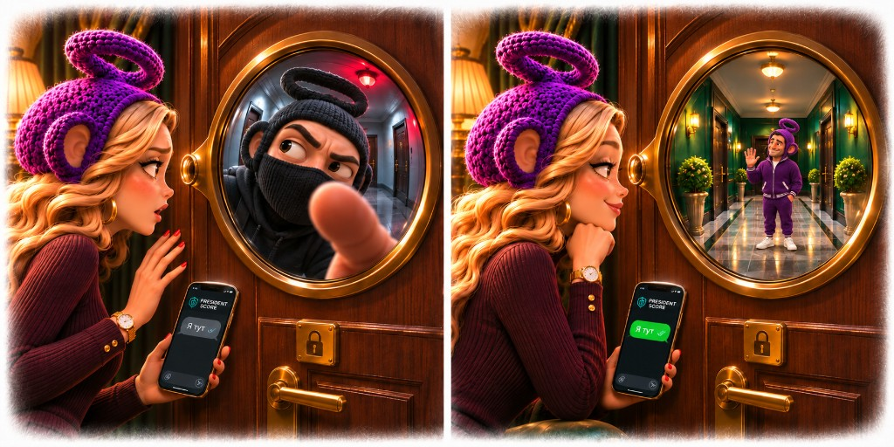
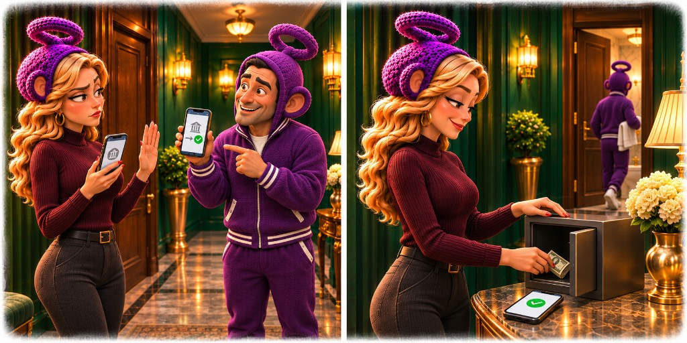

Регламент работы. От переписки до ухода гостя
Доброго времени суток, юные эскортницы! С вами, как всегда, Антон Мартынов, и сегодня я хочу затронуть важную тему — регламент работы. Так что достаём свои тетрадки, ручки и записываем.
Начнём с того, что такое регламент работы. Это свод правил, которые обязательно знать и соблюдать, каким бы чистым ни был гость по прошивке и общению. Самые глупые ситуации происходят только потому, что мы позволяем себе расслабиться. Расслабиться можно только с постоянниками, которые у нас были больше трёх раз.
Итак, записываем.
Этап 1. Проверка гостя и адрес
Вы пробили гостя через свои источники или через наш сервис. Всё хорошо, всё супер, и он уже готов приехать.
Называем адрес в переписке, но только до дома. Подъезд, квартиру, этаж и коды на этом этапе сообщать не нужно.
Когда гость приехал, желательно попросить фото того, что он видит перед собой. Так вы как минимум поймёте, что человек реально приехал, а не пытается разнюхать ваш адрес.
Этап 2. Подъезд, этаж и проверка у двери
Супер, тут разобрались. Теперь говорим подъезд, этаж и квартиру. Дверь у вас всегда должна быть закрыта. Запомните это.
Вот он поднялся к вам на этаж и пишет «Я тут». Смотрим в глазок. Это первичная оценка гостя.
Во-первых, он должен быть один и не оглядываться по сторонам. Глазок на дверь берём суперширокий, чтобы видеть весь коридор. Если глазок закрывают пальцем, не открываем. Уже понятно, что долбоёб какой-то. Включаем режим инкогнито. Нас нет.

Но если вы будете пользоваться нашим продуктом PRESIDENT SCORE и всеми нашими рекомендациями, такой просто не дойдёт до вас, потому что на этапе проверки номера телефона у вас будет вся информация о госте.
Итак, он один, не шатается с бутылкой водки, не оглядывается, ничего не нюхает и не курит сигарету в подъезде. Открываем дверь, запускаем на порог.
Этап 3. Прощупывание
Он зашёл в квартиру. Начинаем с приветствия и пары простых вопросов.
Привет, рада тебя видеть! Как настроение? Как день?
Смотрим не на то, что он говорит, а на то, как отвечает. Считываем язык тела и мимику. Он может быть немного зажат, ему может быть чутка некомфортно. Это нормально. Но если он дёргается и реально на панике, с ним что-то не так. Можно зацепиться за этот момент и напрямую спросить, что случилось.
Если начнёт отвечать негативно и несвязно, выгоняем за дверь без объяснения причин. Да-да, так и говорим.
Попрошу тебя выйти. Ты очень подозрительно и странно себя ведёшь.
Будет сопротивляться — говорим:
Я сейчас вызову охрану, и разговаривать будешь с ней. Я человек неконфликтный.
Поверьте, ничего плохого от этого не будет. Негодяи сами боятся вас больше, чем вы думаете.
Этап 4. Оплата и касса
Допустим, вы задали пару вопросов, и он ответил адекватно, навеселе. Он не пьяный в стельку, не шмыгает носом, будто что-то понюхал. Вот просто мужичок, который пришёл за чем-то конкретным. Супер.
Рассказываем, что у вас оплата наперёд, рассказываем о допах и принимаем оплату — либо налом, либо переводом.
Тем, кто раньше не работал с наличкой, рекомендую приобрести маркер для проверки денег. Там всё просто. Провели полоску и смотрим на её цвет.
Если перевод, пожалуйста, пока деньги не зачислились на счёт, никуда не идём. «Я перевёл, щас в банк позвоню», «Там говорят, перевод поступает до трёх дней» — пиздёж всё это. Либо перевод пришёл, либо ему заблокировали карту и перевод не прошёл. В сказки про «три дня ждать» и так далее верить не надо.
Вы не шлюхи с диванчика, чтобы трахаться бесплатно. Вы бизнес-леди. Поэтому, если карту заблокировали и деньги сразу не пришли, отправляем дорогого гостя в банкомат и ждём уже с наличкой.
Итак, он дал деньги. Вы сразу даёте ему полотенчико и отправляете в душ. Кассу прячем только тогда, когда гость в ванной. Он ни при каких обстоятельствах не должен увидеть, куда вы её спрятали.
Пожалуйста, не совершайте тупых ошибок. Положить кассу в прикроватную тумбочку или в тумбочку у телевизора — самые тупые места, которые можно придумать, если хотите, чтобы у вас потом эту кассу спиздили.
Я не хочу рекомендовать вам конкретные места, но, поверьте, они должны быть вообще неочевидными и далеко не на виду. Рекомендую купить замок электронный для тумбочки. Карточный вариант топовый. Карту просто прячем под ковёр и открываем и закрываем ей сейф, когда гость в ванной.

Этап 5. Приватная сессия и поведение гостя
Гость вышел из ванной. Вы его встречаете, начинаем программу.
Норма — это когда гость вышел из ванной, вы провели приватную сессию и лежите, болтаете. Всё, что из этого выбивается, может показаться странным. Какие странности норм, а какие нет?
Например, если он зашёл и начинает ходить по квартире, что-то высматривать, да, это странно, но ещё не ред флаг. А вот если он пытается вас сфоткать без вашего ведома и по телефону с кем-то болтает на иностранном языке — вот это ред флаг.
Вообще, я вам так скажу. Если вы увидели член гостя, уже можно немного успокоиться. Такое вот правило.
Идём дальше. Гость всегда в поле вашего зрения. Уходить в ванную, закрываться и купаться там, пока он в квартире, ни в коем случае не нужно. Только после того, как он уйдёт.
Все ценные вещи либо при себе, либо очень далеко спрятаны. Дорогие цацки во время работы не носим — цепочки, золотые украшения, дорогие часы. Если гость приходит с ночёвкой, убираем их в сейф подальше. Телефон всегда держим при себе.
Если гость хочет позу собаки и просит выключить свет, рукой проверяем наличие презерватива на его члене. Эта поза опасна тем, что гость может снять презерватив и продолжить сессию без него, без вашего ведома. Так что, если просит заниматься сексом в полной темноте, сразу говорим:
Если попробуешь меня наебать, снять презерватив и трахаться без него, я сожму тебе яйца так, что потом придётся вызывать скорую.
Во время секса тоже проверяем наличие защиты.
Этап 6. Гость ушёл и вернулся
Итак, гость закончил, всё хорошо, помылся и ушёл. Если через какое-то время он начнёт стучаться обратно, дверь вообще не открываем.
Без сообщения дверь никому не открываем. Если это курьер, у вас на телефоне появится сообщение, что он прибыл. Если это гость, он заранее договорился с вами в переписке и написал, что приехал.
А вот просто без предупреждения не открываем никому. Даже если он только что был у тебя и вернулся через пять минут. Пишем и спрашиваем, что ему нужно. По переписке уже решаем, говорить ли ему вообще, что мы в квартире, и выполнять ли его просьбу.
Этап 7. ЧП и как в них действовать
Поговорим о безопасности. Тут я выделяю два вида ЧП — визит полиции и ситуация с негодяем, вором или насильником. О том, с чем можно столкнуться в этой сфере, поговорим в следующих уроках. Разберём базу именно изнутри.
Полиция и жалобы гостей
Рассказывать, как вести себя с полицией и как с ней работать, я не буду. Просто не буду. Расскажу только об одной причине, по которой они могут прийти. И причина простая — это вы.
Что я имею в виду? Гость, которого наебали, обманули, не дали услугу, забрали деньги или оскорбили, может пойти в отдел и написать заявление. Шанс, конечно, маленький, что кто-то придёт и будет читать такое заявление, но случаи бывали.
Поэтому важно понять одну вещь. Гость либо уходит довольный, либо уходит со своими деньгами и без оказанной услуги. Если услуги не было, деньги брать не имеете права. Это азы спокойной работы.
Я понимаю, что он может быть гандоном и быть неправ. Я с вами согласен. Но если вы не притрагивались к члену гостя и то, о чём договорились, не было выполнено, деньги возвращаем и выгоняем. Отдельная история — «Я не кончил, поэтому платить не буду».
Иначе он может превратиться в обиженную мразь, которая захочет вам насрать и расскажет соседям, чем вы занимаетесь. Вам это не нужно. Если докопаются, скажете, что делаете мужской маникюр или работаете портной, и вопросов нет.
Частная охрана
На случай ЧП я рекомендую подключить частную охрану. Рекомендовать конкретно никого не могу. Все, с кем работали, — гондоны, но более-менее нормальные из всех — «Нева». Стоит 5 000 ₽ в месяц. У вас есть кнопка, нажимая на которую вы вызываете отряд.
Имейте в виду, что у охраны должны быть коды от калиток и подъездов, чтобы без вашего участия они могли попасть к вам. Если ещё и запасной ключ от двери спрятан в подъезде, вообще будет шикарно. Если у них есть актуальная информация, тогда да, вам помогут.
Если гость ведёт себя агрессивно
Никогда не отвечайте агрессией на агрессию. Спокойным тоном объясняем человеку, что ему нужно покинуть помещение.
Говорим, что вы вызвали отряд сотрудников, они сейчас придут и вам нужно будет подтвердить, что с вами всё в порядке. Иначе они выломают дверь, и вопросы будут к гостю.
В стрессовых ситуациях я рекомендую держаться так, чтобы вы были ближе к входной двери, чем гость. Почему? Потому что для безопасности я рекомендую держать при себе, в лёгком доступе, перцовый баллон.
Имейте в виду, перцовый баллон в помещении — это план Д, даже не Б. Прилетит всем, не только ему. Перцовкой залили гостя и выбежали из квартиры.
Наша компания вообще проводит интенсивы с тренировками, как вести себя во время ЧП, чтобы не было неизвестности. И прежде чем распылить баллон, задержать дыхание, закрыть нос, рот и глаза и бежать из квартиры.
Заключение
На этом, мои любимые девушки, я заканчиваю урок. Надеюсь, я вас взбодрил, но ни в коем случае не напугал.
Такие случаи — редкость. И чтобы запустить к себе такого гемора, нужно либо работать с ноунейм-агентствами, либо не пользоваться PRESIDENT SCORE, либо не быть подписанной на нашу школу.
Всем хороших ходоков! Не бойтесь работать и запомните. Вы всегда можете отказаться от гостя и попросить его уйти. Только не обманывайте.